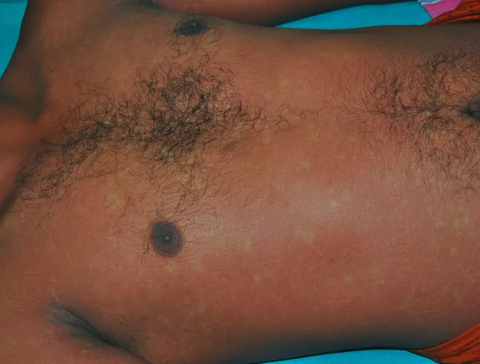

DX.7 — Dengue (fièvre au retour de voyage)
1. Définition et sémantique
Fièvre, frissons, hyperthermiePROFILES
- Maladies infectieuses et parasitairesNotion étudiée ici, dans ce niveau de la classification.
- TumeursCe chapitre CIM-11 réunit les tumeurs bénignes et malignes.
- Maladies du sang ou des organes hématopoïétiquesCe chapitre CIM-11 réunit les anémies et les troubles de la coagulation, qui touchent le sang et la moelle.
- Maladies du système immunitaireCe chapitre CIM-11 réunit les déficits immunitaires et les maladies allergiques ou auto-immunes.
- Maladies endocriniennes, nutritionnelles ou métaboliquesCe chapitre CIM-11 réunit les troubles hormonaux, le diabète et les carences nutritionnelles.
- Maladies de l'appareil respiratoireCe chapitre CIM-11 réunit les infections et les maladies chroniques des poumons et des bronches.
Maladies infectieuses et parasitairesCIM-11, chap. 1
- Infection virale transmise par moustiqueNotion étudiée ici, dans ce niveau de la classification.
- Infections bactériennesCe groupe CIM-11 réunit les maladies causées par une bactérie.
- MycobactériosesCe groupe CIM-11 réunit la tuberculose et les autres infections à mycobactéries.
- Hépatites viralesCe groupe CIM-11 réunit les infections virales du foie, causées par les virus des hépatites.
- Maladies parasitaires, dont le paludisme (DX.6)Ce groupe CIM-11 réunit les maladies causées par un parasite, dont le paludisme transmis par l'anophèle.
- Infections fongiquesCe groupe CIM-11 réunit les mycoses, causées par un champignon.
Infection virale transmise par moustiqueflavivirose
- Dengue ( CIM-11 : 1D20 sans signe d'alarme, 1D21 avec signes d'alarme, 1D22 sévère ; CIM-10 : A90, A91)Notion étudiée ici, dans ce niveau de la classification.14
- ChikungunyaCette arbovirose est transmise par Aedes et donne fièvre et douleurs articulaires.
- ZikaCette arbovirose est transmise par Aedes et reste souvent peu symptomatique.
- Fièvre jauneCette arbovirose est transmise par Aedes aegypti et se prévient par un vaccin.
Dengue ( CIM-11 : 1D20 sans signe d'alarme, 1D21 avec signes d'alarme, 1D22 sévère ; CIM-10 : A90, A91) 14
La dengue est une infection virale fébrile aiguë, transmise par la piqûre de moustiques du genre Aedes (Aedes aegypti, Aedes albopictus)Aedes aegypti est le moustique de la fièvre jaune. Aedes albopictus est le moustique tigre, déjà établi dans plusieurs régions de Suisse. Les deux piquent surtout le jour.2. Quatre sérotypes du virus existent, DENV-1 à DENV-425. La plupart des infections restent asymptomatiques5.
La forme symptomatique évolue en trois phases : fébrile, critique, convalescente4. L'OMS la classe, selon sa classification de 2009 reprise par le CDC, en dengue sans signe d'alarme, avec signes d'alarme et sévère4.
Notions voisines, à ne pas confondre : le paludisme (DX.6)Parasitose transmise par l'anophèle, première urgence à exclure devant toute fièvre au retour des tropiques. Un test négatif pour le paludisme n'exclut pas la dengue, et l'inverse est vrai aussi.1 et le chikungunya et le ZikaDeux autres arboviroses transmises par Aedes, au tableau voisin. L'étude européenne de référence recherche ces deux virus par PCR et sérologie chez tous les voyageurs fébriles sans foyer infectieux.1.
2. Épidémiologie (Suisse, puis Europe)
La Suisse a déclaré 429 cas importés de dengue en 2024, contre 318 en 2023, sans transmission locale (OFSP)3. La cohorte européenne de 765 voyageurs fébriles compte 108 arboviroses contre 96 paludismes, dont 80 de mai à novembre (Camprubí-Ferrer 2022)1. Le moustique tigre est établi en Suisse : le risque local est très faible mais réel (OFSP)2. Une réinfection par un autre sérotype peut exposer à une forme grave (CDC)4.
| Indicateur | Résultat chiffré | Population, lieu, année | Source |
|---|---|---|---|
| Cas confirmés déclarés (nombre de cas) | 429 (318 en 2023)3124 | Déclaration obligatoire, Suisse, 20243124 | 3 |
| Sexe (% des cas) | 49,9 % de femmes, 50,1 % d'hommes3 | Cas déclarés, Suisse, 20243 | |
| Âge médian (années) | 38,5 ans (femmes) ; 43 ans (hommes)3 | Cas déclarés, Suisse, 20243 | |
| Pays d'infection (part des cas) | Thaïlande, Brésil, Indonésie : plus d'un tiers des cas à eux trois | Cas déclarés, Suisse, 20243 | |
| Cas autochtones (nombre de cas, foyers) | 304 (11 foyers en France, 6 en Italie, 1 en Espagne)3 | Europe, 2024 | |
| Cas notifiés (nombre de cas, décès) | 14,6 millions ; plus de 12 000 décès3 | Monde, 2024 | 5 |
| Infections estimées (nombre par an) | 100 à 400 millions par an5 | Monde | |
| Arboviroses : part de la dengue (nombre de cas, %) | 92 sur 108 (85,2 %)5 | Voyageurs fébriles avec fièvre aiguë indifférenciée, cohorte européenne, 2017–20195 | 1 |
| Tendance des cas suisses (cas déclarés par année) | En progression depuis 2014, sauf pendant la pandémie, au-dessus du niveau d'avant1 | Cas déclarés, Suisse, depuis 20141 | 3 |
| Mortalité (qualitative) | Faible si le choc est reconnu et traité à temps | Patients atteints de dengue | |
| Cohorte européenne : voyageurs fébriles inclus (nombre de personnes) | 765, dont 455 avec une fièvre aiguë indifférenciée3 | Voyageurs fébriles, cohorte européenne, 2017–20193 | 1 |
| Arboviroses contre paludisme (nombre de cas) | 108 cas d'arbovirose contre 96 de paludisme ; 80 des 108 de mai à novembre, saison des Aedes1 | Voyageurs fébriles, cohorte européenne, 2017–20191 | 1 |
| Record suisse (nombre de cas) | 429 cas en 2024 contre 318 en 2023 : record ; tous importés, aucune transmission locale documentée1 | Cas déclarés, Suisse, 2023 et 20241 | 3,2 |
| Surveillance (année de début) | Déclaration obligatoire depuis 19893 | Suisse | 2 |
| Risque d'infection (durée de séjour) | Augmenté pour les séjours de plus de 6 mois et en période d'épidémie locale2 | Voyageurs | 4 |
| Risque de transmission locale | Existe, mais reste très faible, car le moustique tigre est établi dans plusieurs régions suisses | Suisse | 2 |
| Forme grave | Une réinfection par un autre sérotype expose davantage | Personnes déjà infectées | 2,4 |
| Formulaires de déclaration (page OFSP) | Disponibles sur la page de l'OFSP, déclaration obligatoire | Suisse | 2,3 |
3. Physiopathologie
Cascade, de la piqûre au signe clinique.
• Amorce (niveau moléculaire). Le moustique inocule le virus dans la peau, où celui-ci pénètre dans les cellules immunitaires locales et se réplique. Il passe ensuite dans le sang : la virémie dure environ 7 jours2. Les tests directs détectent l'ARN viral et l'antigène NS1Protéine non structurale 1 du virus, sécrétée dans le sang2. Son antigène est détectable pendant la première semaine de la maladie. pendant cette période.
• Développement (niveau cellulaire). La réplication active les monocytes et les cellules dendritiques, qui libèrent des cytokines. Ces médiateurs expliquent la fièvre, les céphalées et les douleurs musculaires et articulaires. Le virus et la réponse immune réduisent aussi les globules blancs et les plaquettes : leucopénie, lymphopénie et thrombopénie sont fréquentes4. Ce mécanisme cytokinique est le modèle classique.
• Installation (niveau tissulaire). Autour de la défervescence, la perméabilité capillaire augmente et le plasma sort des vaisseaux. Il en résulte une hémoconcentration, une hypoprotéinémie, une ascite et des épanchements pleuraux. La pression diastolique monte et la pression pulsée se rétrécit : le patient paraît bien malgré un choc débutant.
• Maintien (niveau clinique). Si la fuite dure, la pression systolique s'effondre brutalement et le choc devient irréversible. Un choc prolongé provoque des hémorragies digestives et utérines. La fuite cesse spontanément après 24 à 48 heures ; le liquide est alors réabsorbé et la diurèse reprend4.
• Réinfection. L'immunité contre un sérotype est durable, mais celle contre les trois autres reste courte. Le risque de forme grave est plus élevé lors d'une seconde infection, mais il existe aussi à la première4,2.
Complications expliquées par ces étapes. La fuite plasmatique explique le choc et l'insuffisance respiratoire par épanchement. La thrombopénie et l'atteinte vasculaire expliquent les saignements. L'atteinte directe des organes explique l'hépatite, la myocardite, l'encéphalite et la pancréatite, qui restent rares4.
Tableau de corrélation : lésion, exploration, stratégie qui la corrige.
| Lésion ou perturbation | Exploration qui la montre | Thérapeutique ou classe qui la corrige (mécanisme) |
|---|---|---|
| Virémie (jours 0 à 7)4 | RT-PCR de l'ARN viral ; antigène NS1 | Aucun antiviral n'existe ; traitement symptomatique seulement5 |
| Fièvre et douleurs (cytokines) | Thermomètre ; interrogatoire | ParacétamolDCI : paracétamol (Dafalgan®, n° 47503 ; Dafalgan® i.v. 1 g, n° 66702). Classe : analgésique et antipyrétique non opioïde (ATC N02BE01). Groupe : anilides ; chefs de file : paracétamol seul, association avec la codéine. Indications (AIPS) : douleurs légères à modérées ; traitement symptomatique de la fièvre. Posologie (AIPS) : adulte et plus de 40 kg : 500 à 1'000 mg par prise, intervalle de 4 à 8 heures, maximum 4 g par jour ; voie intraveineuse, plus de 50 kg : 1 g en perfusion de 15 minutes, jusqu'à 4 fois par jour, maximum 4 g.6,7 : il agit sur le centre thermorégulateur, sans effet anticoagulant |
| Thrombopénie, fragilité vasculaire | Numération des plaquettes ; recherche de saignements4 | Éviter les médicaments anticoagulants, dont l'aspirine et les anti-inflammatoires non stéroïdiens2,5. Aucune transfusion de plaquettes préventive |
| Fuite plasmatique, hémoconcentration | Hématocrite, pression pulsée, diurèse, imagerie des épanchements | Perfusion de cristalloïde isotonique au volume minimal : Ringer-Lactat FreseniusDCI : solution de Ringer lactate (électrolytes, lactate), n° 42692. Classe : solution d'électrolytes pour perfusion (ATC B05BB01). Groupe : cristalloïdes isotoniques ; chefs de file : Ringer lactate, NaCl 0,9 %. Indications (AIPS) : apport d'eau et d'électrolytes ; hypovolémie, état de choc, déshydratation. Posologie (AIPS) : adulte 30 ml/kg par jour, soit environ 540 ml/h, maximum 2000 ml par jour en routine ; en choc, jusqu'à 2000 ml/h.10 ou NaCl 0,9 % FreseniusDCI : chlorure de sodium 0,9 %, n° 42425. Classe : solution isotonique de chlorure de sodium (ATC B05BB01). Groupe : cristalloïdes isotoniques ; chefs de file : NaCl 0,9 %, Ringer lactate. Indications (AIPS) : apport hydro-électrolytique, remplacement de liquide. Posologie (AIPS) : adulte, dose moyenne 1000 ml par jour en perfusion continue, maximum 2000 ml par jour sauf situation extrême.11 : il restaure le volume sans surcharge |
| Hépatite réactive | ASAT et ALAT ; lactate déshydrogénase4 | Paracétamol : contre-indiqué en hépatite aiguë et en insuffisance hépatique sévère ; maximum 2 g par jour si hépatopathie légère à modérée ou déshydratation6 |
| Absence d'immunité | Anamnèse d'une infection antérieure ; sérologie | Le vaccin vivant atténué Qdenga®DCI : vaccin tétravalent contre la dengue, vivant atténué (n° 69403, Takeda Pharma AG). Classe : vaccin viral vivant (ATC J07BX04). Groupe : vaccins contre la dengue ; chefs de file : Qdenga® ; le second vaccin disponible en Europe n'est pas autorisé en Suisse2. Indications (AIPS) : prévention de la dengue dès l'âge de 4 ans. Posologie (AIPS) : 0,5 ml par voie sous-cutanée, 2 doses à 0 et 3 mois ; pas de rappel nécessaire selon les données actuelles.8 stimule une immunité contre les quatre sérotypes |
4. Démarche diagnostique
Devant une fièvre au retour de voyage, le médecin exclut d'abord ce qui menace la vie, puis confirme la dengue. Pour la dengue, l'ordre des diagnostics suit la liste du plan ; il n'exprime aucune fréquence relative.
Étape 1 — Chercher les drapeaux rouges devant la dengue. Chaque drapeau est cliquable : sa fenêtre dit pourquoi il est rouge dans ce tableau.
| Drapeau rouge | Signe ou examen qui tranche | Piège classique | Conduite immédiate |
|---|---|---|---|
| 🚩 Signes d'alarme de dengueDouleur abdominale intense, vomissements persistants, épanchement, saignement muqueux, hémoconcentration croissante, hypotension orthostatique, léthargie ou agitation, hépatomégalie. Ils annoncent la fuite plasmatique et le choc. Ils apparaissent souvent à la défervescence. | Examen répété à chaque consultation ; hématocrite et plaquettes | Croire à la guérison quand la fièvre tombe : c'est le moment le plus dangereux | Hospitalisation, surveillance stricte |
| 🚩 Choc ou pression pulsée étroiteLa pression diastolique monte, la pression pulsée se rétrécit, le patient paraît bien. Quand la pression systolique chute, le choc devient irréversible. | Pression pulsée, recoloration capillaire, diurèse | Pression normale ne rassure pas : la compensation masque le choc | Voir le point 11.B, urgence |
| 🚩 Paludisme (DX.6)Le paludisme à Plasmodium falciparum peut tuer en quelques jours. Plus de 40 % des voyageurs avec fièvre indifférenciée ont un paludisme ou une dengue ; les deux se diagnostiquent par test rapide.1 | Test rapide et frottis, goutte épaisse | S'arrêter à une dengue positive sans exclure le paludisme | Exclure le paludisme avant toute autre étape |
| 🚩 Sepsis, méningite (DX.11, DX.12)Hypotension, confusion, purpura ou raideur de nuque imposent de couvrir une infection bactérienne grave. La dengue sévère donne aussi un choc et des pétéchies. Les deux diagnostics se traitent en parallèle jusqu'à la preuve. | Raideur de nuque, purpura, lactate, hémocultures | Attribuer un purpura ou un choc à la seule dengue | Voir DX.11 et DX.121 |
| 🚩 Rickettsiose avec escarreUne escarre multiplie la probabilité d'une maladie sensible à la doxycycline (rapport de cotes ajusté 39,52)13. Une douleur rétro-orbitaire ou une neutropénie va dans le sens de la dengue.13 | Recherche d'une escarre sur toute la peau | Oublier de chercher l'escarre dans le cuir chevelu, les plis et le périnée | Supracycline® (doxycycline)DCI : doxycycline (Supracycline Tabs, n° 49771). Classe : antibiotique tétracycline (ATC J01AA02). Groupe : tétracyclines ; chefs de file : doxycycline, minocycline, tétracycline. Indications (AIPS) : infections bactériennes sensibles aux tétracyclines. Posologie (AIPS) : adulte : 200 mg le premier jour, puis 100 mg par jour en une prise ; 200 mg par jour dans l'infection grave. Grossesse et allaitement (AIPS) : à ne pas administrer, sauf nécessité absolue ; allaitement à arrêter si le traitement est nécessaire.15 si escarre ou forme sévère, après paludisme et dengue exclus1 |
| 🚩 GrossesseLa dengue de la femme enceinte impose l'hospitalisation. Elle augmente le risque d'avortement au premier trimestre, de faible poids de naissance et de prématurité. | Test de grossesse ; terme | Traiter en ambulatoire par habitude | Hospitalisation systématique |
Étape 2 — En l'absence de drapeau rouge, le médecin suit les étapes suivantes.
1. Dater le retour : la dengue se cherche si les symptômes débutent dans les 14 jours après le retour d'une zone d'endémie4.
2. Le médecin exclut le paludisme par test rapide et frottis le jour même.
3. Prélever la RT-PCR et l'antigène NS1 si la maladie dure 7 jours ou moins ; ajouter les IgM dès le quatrième jour4.
4. Doser l'hémogramme, l'hématocrite, les ASAT, les ALAT et la CRP : leucopénie, thrombopénie et transaminases élevées soutiennent la dengue.
5. Rechercher les signes d'alarme à chaque contrôle, surtout à la défervescence.
6. Si la dengue et le paludisme sont négatifs, élargir : chikungunya, Zika, maladies sensibles à la doxycycline1,13.
5. Anamnèse ciblée et drapeaux rouges
| Question clé | Raison physiopathologique : pourquoi elle change la décision |
|---|---|
| Quel pays, quelle région, quelle date de retour ?La dengue sévit dans les tropiques et les zones subtropicales de plus de 100 pays2. En Suisse, la plupart des cas viennent de Thaïlande, du Brésil et d'Indonésie. L'incubation est de 4 à 7 jours, rarement de 3 à 142. Un début plus de 14 jours après le retour fait chercher une autre cause.2,3,4 | La date et le lieu fixent la probabilité de dengue, de paludisme et d'autres maladies. |
| Quand la fièvre a-t-elle commencé ?Le jour de la maladie choisit le test : RT-PCR et NS1 la première semaine, IgM à partir du quatrième jour. La fièvre dure 2 à 7 jours, parfois en deux vagues2. | La virémie dure environ 7 jours ; au-delà, les tests directs perdent leur sensibilité2. |
| Quelles piqûres de moustique, de jour ?Aedes pique le jour, surtout en journée et en soirée. L'absence de souvenir de piqûre n'exclut pas la dengue.2 | L'exposition au vecteur confirme la voie de transmission. |
| Dengue antérieure ?Une seconde infection par un autre sérotype expose davantage à la dengue sévère. Une première infection reste possible.2,4 | Les anticorps du premier sérotype protègent mal contre les trois autres. |
| Vaccin Qdenga® reçu ?La virémie vaccinale positive les tests de la dengue pendant la deuxième semaine après la première dose. Les tests ne distinguent pas virus vaccinal et virus sauvage.8 | Le vaccin vivant atténué se réplique et rend les tests positifs. |
| Prophylaxie antipaludique prise ?Une prophylaxie réduit la probabilité de paludisme sans l'annuler. Elle ne protège pas contre la dengue. | Elle déplace le risque entre les diagnostics, pas vers zéro. |
| Quels médicaments ont été pris ?L'aspirine et les anti-inflammatoires non stéroïdiens ont un effet anticoagulant. Ils aggravent le risque de saignement. L'OFSP contre-indique les salicylés.2,4 | Ces médicaments perturbent la fonction plaquettaire déjà fragile. |
| Grossesse, maladies chroniques ?La grossesse impose l'hospitalisation. Une insuffisance hépatique limite le paracétamol : il est contre-indiqué si elle est sévère.6 | Elles modifient le lieu de prise en charge et le choix de l'antipyrétique. |
| Quels symptômes accompagnent la fièvre : douleurs, éruption, saignements, vomissements ? | Ils signalent la phase fébrile ou l'arrivée de la fuite plasmatique. |
Drapeaux rouges actionnables.
• Douleur abdominale intense ou vomissements persistantsIls traduisent l'épanchement ou l'atteinte hépatique. Ils annoncent la fuite plasmatique. : hospitaliser le jour même.
• Saignement muqueux, selles noires, vomissement de sangLe saignement muqueux est un signe d'alarme. Les hémorragies digestives surviennent surtout après un choc prolongé. : hospitaliser, numération, transfusion de globules rouges si saignement actif.
• Léthargie ou agitationElle reflète la mauvaise perfusion cérébrale ou une atteinte neurologique rare. : examen neurologique, hospitalisation, exclure méningite.
• Devant une fièvre avec choc ou purpura, le médecin appelle le 144 et traite comme un sepsis jusqu'à preuve du contraire4.
6. Examen physique ciblé, région par région
Pour la dengue, le médecin décrit d'abord le normal attendu, puis le pathologique. La littérature lue ne donne pas de sensibilité ni de spécificité chiffrées pour ces signes : leur valeur reste qualitative4.
| Région | Normal attendu | Signes à rechercher (cliquer pour la technique, la valeur et le piège) |
|---|---|---|
| Constantes | Afébrile ; pouls de 60 à 100 par minute ; pression artérielle normale ; pression pulsée large ; recoloration capillaire inférieure à 2 secondes ; diurèse conservée4. | TempératureTechnique : thermomètre tympanique ou buccal, à chaque consultation. Valeur : la fièvre dure 2 à 7 jours, parfois en deux vagues. Piège : la chute de la fièvre marque l'entrée possible dans la phase critique, pas la guérison. · Pression artérielle et pression pulséeTechnique : brassard adapté, patient couché puis debout ; pression pulsée = systolique moins diastolique. Valeur : une pression pulsée étroite et une hypotension orthostatique annoncent le choc. Piège : la pression systolique reste longtemps normale avant l'effondrement. · Fréquence cardiaque et recoloration capillaireTechnique : palper le pouls radial une minute ; comprimer un ongle 5 secondes. Valeur : tachycardie et recoloration lente signent l'hypoperfusion. Piège : la bradycardie peut apparaître pendant la convalescence4. |
| Peau et muqueuses | Peau normale ; muqueuses humides ; absence de pétéchies. | Éruption maculopapuleuseTechnique : examiner le tronc et les membres à la lumière du jour. Valeur : elle apparaît pendant la phase fébrile. En convalescence, une éruption confluente laisse des îlots de peau saine (« îlots de blanc sur mer de rouge »), parfois très prurigineuse. Piège : une éruption n'est pas spécifique ; elle n'écarte ni le paludisme ni la rickettsiose. · Pétéchies et test du tourniquetTechnique : inspecter les membres ; pour le test, gonfler le brassard entre les pressions systolique et diastolique pendant quelques minutes, puis compter les pétéchies sur une surface définie. Valeur : un test positif fait partie des manifestations hémorragiques mineures de la dengue. Piège : un test négatif n'exclut pas la dengue ; un purpura étendu impose d'exclure la méningococcémie. · Saignement gingival ou nasalTechnique : inspecter gencives, narines, urines. Valeur : le saignement muqueux est un signe d'alarme. Piège : un saignement mineur apparaît aussi en phase fébrile bénigne. · EscarreTechnique : inspecter cuir chevelu, plis, aisselles et périnée. Valeur : elle oriente vers une rickettsiose (rapport de cotes 39,52). Piège : une escarre cachée dans les plis passe inaperçue.13 |
| Tête et cou | Pharynx normal ; yeux indolores ; nuque souple. | Douleur rétro-orbitaireTechnique : demander la douleur à la mobilisation des yeux ; palper l'orbite. Valeur : signe classique de dengue, associé négativement aux maladies sensibles à la doxycycline (rapport de cotes 0,40). Piège : elle manque chez beaucoup de patients. · Pharynx injecté, érythème facialTechnique : abaisser la langue, observer le pharynx et le visage. Valeur : fréquent pendant les premières 24 à 48 heures. Piège : il évoque aussi une pharyngite virale banale. · Raideur de nuqueTechnique : patient couché, soulever la tête, chercher la résistance à la flexion. Valeur : elle impose d'exclure une méningite. Piège : absente chez le patient très somnolent13. |
| Thorax | Murmure vésiculaire symétrique ; percussion sonore. | Épanchement pleuralTechnique : percuter les bases, comparer les côtés, ausculter le murmure. Valeur : matité et murmure diminué signent l'épanchement, conséquence de la fuite plasmatique. Piège : l'épanchement léger échappe à l'examen ; l'imagerie le montre. · Fréquence respiratoireTechnique : compter une minute entière. Valeur : une polypnée traduit épanchement ou choc. Piège : la fièvre l'accélère aussi. |
| Abdomen | Souple, indolore ; foie non palpable sous le rebord costal. | Douleur abdominaleTechnique : palper doucement les quatre quadrants, puis l'épigastre et l'hypochondre droit. Valeur : une douleur intense est un signe d'alarme. Piège : elle imite une urgence chirurgicale. · HépatomégalieTechnique : palper le bord hépatique en inspiration profonde, main droite sous le rebord costal. Valeur : signe d'alarme. Piège : un foie sensible et augmenté évoque aussi hépatite virale. · AsciteTechnique : chercher la matité des flancs déclive et son déplacement. Valeur : elle signe la fuite plasmatique. Piège : une ascite faible n'est visible qu'à l'échographie. |
| Appareil locomoteur et neurologique | Mobilité articulaire indolore ; conscience claire. | Arthralgies et myalgiesTechnique : palper muscles et articulations, interroger sur l'intensité. Valeur : les douleurs musculaires, articulaires et osseuses sont typiques ; la dengue est dite « fièvre qui brise les os ». Piège : le chikungunya donne des arthralgies encore plus marquées.5 · Léthargie ou agitationTechnique : observer l'attention, poser des questions simples, évaluer l'orientation. Valeur : signe d'alarme. Piège : la fièvre seule peut fatiguer. |
L'éruption de la convalescence se reconnaît à ses îlots de peau saine4.
Éruption de convalescence de la dengue : îlots de peau saine dans une nappe rouge. Cette photographie clinique montre le thorax et l'abdomen d'un adulte, de face, sur peau pigmentée.

Il faut d'abord lire seul ce cliché et chercher soi-même le signe.
La copie annotée porte les repères décrits ci-dessous.
- Cet îlot de peau saine est clair et arrondi, au bord du thorax.
- Cet autre îlot de peau saine est entouré par la nappe érythémateuse de l'abdomen.
- Ces îlots plus petits sont confluents et la nappe rouge les entoure.
- Sur peau pigmentée, la rougeur est discrète : il faut chercher les îlots clairs plutôt que le rouge.
- Cette éruption signe la convalescence, pas la gravité : elle ne dispense pas de rechercher les signes d'alarme.
Ce que l'image décide. Une éruption à îlots de peau saine signe la convalescence d'une dengue. La RT-PCR ou le NS1 la confirme si la maladie dure 7 jours ou moins ; sinon, on prescrit les IgM.4
7. Approche syndromique
Dans la dengue, chaque syndrome est éclaté en signes fonctionnels (ce que dit le patient) et en signes physiques (ce que trouve le médecin). Chaque signe est cliquable : définition, geste, mécanisme4,5.
7.1 Syndrome fébrile de la phase aiguë : il regroupe les signes suivants4.
| Signes fonctionnels | Signes physiques (°C) |
|---|---|
| Fièvre élevée, frissonsDéfinition : sensation de chaleur avec frissons, début brutal. Mécanisme : les cytokines libérées par les monocytes infectés élèvent le seuil thermorégulateur de l'hypothalamus. Elle dure 2 à 7 jours et peut être biphasique. · Céphalée sévèreDéfinition : douleur frontale ou diffuse intense. Mécanisme : médiateurs inflammatoires de la virémie. Piège : une céphalée avec raideur de nuque impose d'exclure une méningite. · Myalgies et arthralgiesDéfinition : douleurs musculaires, articulaires et osseuses, parfois décrites comme « brisant les os ». Mécanisme : cytokines et inflammation musculaire.5 · Nausées | Température élevéeGeste : thermomètre tympanique ou buccal. Normal : moins de 38 °C. Pathologique : fièvre qui dure 2 à 7 jours. Mécanisme : voir la colonne de gauche. · Douleur rétro-orbitaire à la mobilisation des yeuxGeste : demander au patient de regarder à droite, à gauche, en haut, en bas, puis palper l'orbite. Normal : indolore. Pathologique : douleur derrière les yeux, classique dans la dengue. Mécanisme : inflammation des muscles et tissus orbitaires, non précisée dans les sources.13 · Éruption maculopapuleuseGeste : inspecter tronc et membres à la lumière du jour. Normal : peau uniforme. Pathologique : macules rouges et petites élevures, effaçables. Mécanisme : vasodilatation cutanée liée aux cytokines. · Pharynx injectéGeste : abaisser la langue, éclairer le fond de gorge. Normal : muqueuse rose. Pathologique : rougeur diffuse des premières 24 à 48 heures. Mécanisme : vasodilatation muqueuse. |
7.2 Syndrome de fuite plasmatique : il réunit les signes suivants13.
| Signes fonctionnels | Signes physiques |
|---|---|
| Douleur abdominaleDéfinition : douleur épigastrique ou de l'hypochondre droit, intense. Mécanisme : épanchement péritonéal et distension de la capsule hépatique par la fuite plasmatique. C'est un signe d'alarme. · DyspnéeDéfinition : sensation d'essoufflement. Mécanisme : épanchement pleural ou surcharge liquidienne. · Soif intense, faiblesseDéfinition : besoin de boire, perte de force. Mécanisme : hypovolémie par fuite de plasma.5 | Pression pulsée étroiteGeste : mesurer la pression au brassard et soustraire la diastolique de la systolique. Normal : pression pulsée large. Pathologique : étroite, car la diastolique monte. Mécanisme : compensation de la fuite par vasoconstriction. · Hypotension orthostatiqueGeste : mesurer la pression couché, puis debout après 1 à 3 minutes. Normal : chute modérée sans symptôme. Pathologique : chute avec vertige. Mécanisme : perte de volume intravasculaire. · Matité pleuraleGeste : percuter les bases, comparer les deux côtés, ausculter. Normal : sonorité symétrique. Pathologique : matité et murmure diminué. Mécanisme : liquide dans la plèvre. · AsciteGeste : percuter les flancs en décubitus, chercher la matité qui se déplace. Normal : tympanisme des flancs. Pathologique : matité déclive. Mécanisme : liquide dans le péritoine. · Hématocrite élevéGeste : prélèvement sanguin répété. Normal : stable. Pathologique : hausse progressive. Mécanisme : le plasma quitte les vaisseaux et les globules rouges se concentrent5. |
7.3 Syndrome hémorragique.
| Signes fonctionnels | Signes physiques |
|---|---|
| Saignements de nez ou des gencivesDéfinition : épistaxis, gingivorragie signalées par le patient. Mécanisme : thrombopénie et fragilité capillaire. Le saignement muqueux est un signe d'alarme. · Règles abondantes, selles noiresDéfinition : ménorragie, méléna. Mécanisme : hémorragie après choc prolongé. | Pétéchies, ecchymosesGeste : inspecter membres, thorax, creux axillaires. Normal : peau sans tache. Pathologique : petites taches rouges non effaçables. Mécanisme : extravasation capillaire. · Test du tourniquetGeste : gonfler un brassard entre systolique et diastolique pendant quelques minutes, puis compter les pétéchies. Normal : absence de pétéchies nouvelles. Pathologique : pétéchies nombreuses. Mécanisme : fragilité capillaire. · HématurieGeste : bandelette urinaire. Normal : négative. Pathologique : sang visible ou bandelette positive. Mécanisme : saignement muqueux urinaire. |
7.4 Atteinte d'organe. Elle reste rare4.
| Signes fonctionnels | Signes physiques |
|---|---|
| Douleur de l'hypochondre droit, ictèreDéfinition : douleur hépatique, coloration jaune. Mécanisme : hépatite de dengue. · ConfusionDéfinition : désorientation ou somnolence. Mécanisme : encéphalite ou hypoperfusion cérébrale. · Douleur thoracique, palpitationsDéfinition : douleur ou irrégularité du rythme cardiaque. Mécanisme : myocardite. | HépatomégalieGeste : main droite sous le rebord costal, inspiration profonde, palper le bord. Normal : foie non palpable. Pathologique : bord palpable et sensible. Mécanisme : atteinte hépatique et congestion. C'est un signe d'alarme. · Troubles de la conscienceGeste : poser trois questions simples d'orientation, évaluer l'attention. Normal : patient orienté et attentif. Pathologique : léthargie ou agitation. Mécanisme : hypoperfusion cérébrale ou encéphalite. · Auscultation cardiaque anormaleGeste : ausculter les quatre foyers, compter la fréquence une minute. Normal : bruits réguliers. Pathologique : arythmie ou bruits assourdis. Mécanisme : myocardite. |
7.5 Syndrome de convalescence : il regroupe les signes suivants4.
| Signes fonctionnels | Signes physiques |
|---|---|
| Fatigue de plusieurs semainesDéfinition : asthénie persistante après la guérison. Mécanisme : récupération lente. Elle peut durer plusieurs semaines.5 · PruritDéfinition : démangeaison de l'éruption tardive. | BradycardieGeste : palper le pouls radial une minute. Normal : 60 à 100 par minute. Pathologique : moins de 60 par minute. Mécanisme : stabilisation hémodynamique après réabsorption. · Éruption confluente avec îlots de peau saineGeste : inspecter le tronc et les membres. Pathologique : « îlots de blanc sur mer de rouge », parfois avec desquamation. Mécanisme : réaction cutanée de convalescence5. |
8. Diagnostic positif et critères
Critères de confirmation. Chez un patient avec une clinique et un voyage compatibles, la détection du virus par RT-PCR ou de l'antigène NS1 dans un seul prélèvement confirme la dengue. Une IgM sur un seul sérum signe une infection récente probable4.
| Résultat | Ce qu'il permet | Ce qu'il ne permet pas |
|---|---|---|
| RT-PCR ou NS1 positifs (≤ 7 jours)4 | Confirme la dengue avec une clinique compatible | Ne prédit pas la gravité |
| IgM positives, un seul sérum | Dengue probable (IgM détectables dès le quatrième jour) | Pas de certitude : réactions croisées entre flavivirus |
| IgG positives, un seul sérum | Rien pour un diagnostic aigu | Les IgG persistent à vie ; les autres flavivirus et leurs vaccins les provoquent |
| Tests positifs après vaccination par Qdenga® | Rien : la virémie vaccinale les positive | Impossible de distinguer virus vaccinal et sauvage8 |
Classification clinique de l'OMS (2009, reprise par le CDC) : l'usage immédiat. Les trois catégories guident la surveillance et le lieu de soins69403.
| Catégorie | Critères (OMS, reprise par CDC) | Usage immédiat |
|---|---|---|
| Dengue sans signe d'alarme | Fièvre avec voyage compatible et signes non spécifiques (nausées, éruption, douleurs, leucopénie) | Ambulatoire avec contrôle ; conseil de reconsulter si un signe d'alarme apparaît |
| Dengue avec signes d'alarme | Douleur abdominale intense, vomissements persistants, épanchement, saignement muqueux, hémoconcentration progressive, hypotension orthostatique, léthargie, hépatomégalie4 | Hospitalisation, surveillance stricte |
| Dengue sévère | Choc par fuite plasmatique, saignement grave, atteinte d'organe grave (par exemple ASAT ou ALAT à 1 000 U/L ou plus, conscience altérée, selon un répertoire secondaire de la CIM-1114) | Soins intensifs ; voir le point 11.B |
Ce qui ne suffit pas. Une fièvre au retour de voyage ne prouve pas la dengue. Une leucopénie ou une thrombopénie sans test viral ne suffit pas non plus à la prouver. Une RT-PCR ou un NS1 négatifs n'excluent pas la dengue, surtout après le septième jour, quand la virémie baisse : les IgM la recherchent alors4.
9. Examens complémentaires
9.a Gold standard.
La détection directe du virus est la référence de la phase aiguë : RT-PCR de l'ARN viral, antigène NS1 ou isolement viral pendant la première semaine4,5. Une RT-PCR positive dans un seul prélèvement confirme la dengue avec une clinique compatible.
9.b Première intention.
| Examen | Indication et prescription | Normal (SI suisses) | Résultat → signification → conduite |
|---|---|---|---|
| Test rapide du paludisme et frottis, goutte épaisse | Tout voyageur fébrile revenant des tropiques ; le jour même1 | Négatif | Positif → paludisme (DX.6), urgence1. Négatif et clinique évocatrice → poursuivre ; répéter selon l'avis d'un infectiologue. |
| RT-PCR et antigène NS1 de la dengue | Sang total, plasma ou sérum ; idéalement dans les 7 premiers jours ; encore possible 7 jours de plus4 | Négatif | Positif → dengue confirmée. Négatif après le septième jour → ajouter les IgM. Négatif précoce avec clinique forte → répéter. |
| Hémogramme | À chaque consultation en cas de suspicion ; hématocrite compris | Plaquettes 150 à 450 G/L ; leucocytes 4 à 10 G/L (intervalles usuels des laboratoires suisses ; la fiche du laboratoire fait foi)4 | Leucopénie, lymphopénie, thrombopénie → dengue probable. Hématocrite en hausse progressive → fuite plasmatique, signe d'alarme. Plaquettes en baisse rapide → hospitaliser. |
| ASAT et ALAT | Bilan hépatique initial | ALAT inférieure à 40 U/L (valeur usuelle ; la fiche du laboratoire fait foi)4 | Élévation → atteinte hépatique de dengue. Très élevée avec confusion → forme sévère. Limite le paracétamol : voir le point 11. |
| Natrémie, créatinine | Si vomissements, hospitalisation ou perfusion | Natrémie 135 à 145 mmol/L (valeur usuelle ; la fiche du laboratoire fait foi)4 | Hyponatrémie fréquente → adapter la perfusion isotonique. Créatinine élevée → ajuster le volume. |
| CRP, hémocultures | Si sepsis possible, choc ou fièvre prolongée | CRP inférieure à 5 mg/L (valeur usuelle ; la fiche du laboratoire fait foi)4 | CRP très élevée ou hémocultures positives → infection bactérienne : voir DX.114. |
9.c Alternatives.
| Examen | Quand l'utiliser | Interprétation et limites |
|---|---|---|
| IgM antidengue (ELISA) | À partir du quatrième jour ; jusqu'à environ 12 semaines après le début4 | Positive sur un seul sérum : dengue probable. Réaction croisée avec d'autres flavivirus ; si le voyage inclut d'autres flavivirus, faire PCR et sérologie ensemble. |
| Test rapide combiné NS1 et IgM | Diagnostic de première ligne, quand disponible | La combinaison IgM et NS1 donne la meilleure performance parmi les tests rapides. |
| Sérologie des IgG | Jamais en échantillon unique | Les IgG restent détectables toute la vie ; non utile en routine. |
| Échographie abdominale et thoracique | Douleur abdominale, dyspnée, suspicion de fuite | Montre ascite et épanchement pleural, signes de fuite plasmatique. Sans irradiation : adaptée à la grossesse. Aucune contre-indication liée à la fonction rénale. |
9.d Deuxième intention.
| Examen | Critère de passage | Interprétation |
|---|---|---|
| PCR et sérologie du chikungunya et du Zika | Dengue et paludisme négatifs chez un voyageur fébrile sans foyer, dans les 14 jours après le retour1 | La cohorte européenne les cherche chez tous ces patients. Positif → traiter selon la maladie trouvée. |
| Recherche de maladies sensibles à la doxycycline (rickettsies, Coxiella, Bartonella, Leptospira) | Escarre, forme sévère ou absence de signe de dengue13 | Ces maladies causent 30,5 % des fièvres indifférenciées sans paludisme dans une cohorte de 347 voyageurs13. Seules 53,8 % sont diagnostiquées par les soins habituels13. |
| Hémocultures, ponction lombaire | Signes de sepsis ou de méningite | Voir DX.11 et DX.1213. |
Comment prescrire. Le bon de laboratoire porte la date de début des symptômes, le pays et les dates du voyage, et les vaccins reçus, dont Qdenga® et la fièvre jaune. Ces trois données fixent le test à faire et le risque de réaction croisée entre flavivirus4,8. Le prélèvement est un tube de sang. Le laboratoire choisit sérum, plasma ou sang total pour la RT-PCR . Le médecin documente l'heure du prélèvement pour répéter la RT-PCR si elle est négative trop tôt.
Cas particuliers. Chez la femme enceinte, il faut hospitaliser, réaliser une échographie sans irradiation et surveiller le terme4. Enfant : le paracétamol se dose selon le poids6. Insuffisance rénale : la perfusion exige une surveillance étroite du volume ; le paracétamol oral s'espace de 6 heures, maximum 3 g par jour, pour une clairance de 10 à 50 ml/min4750366702. Après vaccin Qdenga® : les tests positifs ne distinguent pas virus vaccinal et sauvage8.
10. Arbre décisionnel
L'arbre écarte d'abord les urgences, puis cherche la cause, puis choisit le lieu de soins.
• N0. Si le patient présente un choc, un purpura étendu, une confusion ou une raideur de nuque, le médecin appelle le 144 et hospitalise4. Il traite le sepsis et le paludisme en parallèle (DX.6, DX.11, DX.12)1. Sinon, on passe à N1.
• N1. Si une fièvre survient dans les 14 jours après un retour d'une zone d'endémie, le médecin fait un test rapide du paludisme et un frottis le jour même4. Si le test est positif, on suit DX.6 ; s'il est négatif, on passe à N21.
• N2. Si la maladie dure 7 jours ou moins, le médecin prescrit la RT-PCR et l'antigène NS14. Si elle dure plus longtemps, ou si ces tests sont négatifs avec une clinique évocatrice, il prescrit les IgM dès le quatrième jour, puis on passe à N3.
• N3. Si RT-PCR ou NS1 positifs → dengue confirmée ; si IgM seules → dengue probable ; si tout est négatif → chikungunya, Zika, maladies sensibles à la doxycycline1,13 ; N4.
• N4. Si signe d'alarme (douleur abdominale intense, vomissements persistants, saignement muqueux, léthargie, hépatomégalie, hémoconcentration) ou grossesse → hospitaliser ; sinon → N5.
• N5. Si le patient ne montre aucun signe d'alarme, boit sans difficulté et ne présente aucune situation à risque (nourrisson, personne âgée, comorbidité grave, isolement social), les soins restent ambulatoires. Ils comprennent le paracétamol, l'hydratation orale et un contrôle à 24 à 48 heures puis à la défervescence, avant de passer à N61.
• N6. Si une pression pulsée étroite, une hypotension ou une oligurie apparaissent → traiter comme dengue sévère (point 11.B) ; sinon → convalescence et prévention (point 12)4.
11. Prise en charge selon les recommandations suisses
11.A But thérapeutique.
Le but est d'éviter le choc, les hémorragies et le décès. Un choc reconnu tôt et traité par un soutien intensif diminue la mortalité d'au moins 20 fois5. La cible hémodynamique est une diurèse d'au moins 0,5 ml/kg par heure5. La phase critique dure 24 à 48 heures5. La fatigue persiste ensuite plusieurs semaines5. Aucun antiviral n'existe : le traitement soutient le patient jusqu'à la guérison spontanée.
11.B Moyens pour la dengue : urgences, ordre du traitement, pharmacologie, non pharmacologique, situations spéciales5.
Urgence — conduite chronologique : la dengue sévère avec choc se traite en quatre temps.
De 0 à 15 minutes. Le médecin doit reconnaître le choc : pression pulsée étroite, tachycardie, recoloration capillaire lente et hypotension4. Il appelle le 144 ou l'équipe de réanimation, pose deux voies veineuses et prélève l'hématocrite, les plaquettes, la lactatémie, les hémocultures et le groupe sanguin4. Il donne de l'oxygène si la saturation baisse4.
De 15 à 60 minutes. Il faut perfuser un cristalloïde isotonique, Ringer-Lactat Fresenius ou NaCl 0,9 %4,11. Le volume perfusé est le minimum qui restaure le volume intravasculaire et la perfusion10,4. Il faut réévaluer les constantes et les signes de choc après chaque changement de débit4. La cible est une diurèse d'au moins 0,5 ml/kg par heure10,4.
Heures suivantes. Si le saignement est actif, il faut transfuser des concentrés érythrocytaires ou du sang total4. Il ne faut pas transfuser de plaquettes à titre préventif, car cela favorise la surcharge liquidienne. Il ne faut pas donner de corticoïdes. Il faut surveiller la surcharge liquidienne : dyspnée, râles.
Orientation. Le patient va en soins intensifs ; les perfusions ne durent habituellement que 24 à 48 heures, pendant la phase critique10,4.
Dengue avec signes d'alarme, sans choc : il faut hospitaliser le patient pour une surveillance stricte, avec hydratation et contrôles répétés de l'hématocrite et des signes vitaux4. Les consignes de volume du choc s'appliquent si l'état se dégrade.
Dengue sans signe d'alarme : ordre du traitement.
1. Mesures générales. Le médecin prescrit le repos et une hydratation orale abondante4. Le patient se protège des piqûres de moustique pendant la fièvre, pour éviter de transmettre le virus à d'autres personnes. Il reçoit la liste écrite des signes d'alarme et reconsulte sans délai s'ils surviennent. Raison : la fuite plasmatique peut apparaître à la défervescence.
2. Pharmacologique. Le paracétamol (Dafalgan®) contrôle la fièvre et la douleur6. Un adulte peut prendre 500 à 1'000 mg toutes les 4 à 8 heures, sans dépasser 4 g par jour6. Le patient vérifie que ses autres médicaments ne contiennent pas de paracétamol : le surdosage détruit le foie.
• Médicaments à éviter. Aspirin® (aspirine) et Algifor® (ibuprofène) sont exclus : leur effet sur les plaquettes augmente le risque de saignement9,12.
3. Non pharmacologique. Le médecin conseille des bains tièdes contre la fièvre4. Alimentation selon l'appétit, boissons abondantes.
4. Suivi. Contrôle clinique et biologique à 24 à 48 heures, puis à la défervescence ; hospitalisation au premier signe d'alarme4.
Le tableau résume la dose, la voie, la durée et la contre-indication de chaque médicament selon l'AIPS.
| Molécule ® (n° Swissmedic) | Dose AIPS | Voie | Durée | Contre-indication majeure | Extrait AIPS |
|---|---|---|---|---|---|
| Paracétamol (Dafalgan®, n° 47503) | Adulte et plus de 40 kg : 500 à 1'000 mg par prise, toutes les 4 à 8 heures, maximum 4 g par jour6. | Orale. | Trois jours au plus chez l'enfant jusqu'à 12 ans sans avis médical6. | Insuffisance hépatique grave, hépatite aiguë, maladie de Gilbert6. | « Il ne faut pas dépasser la dose journalière maximale de 4000 mg de paracétamol. »6 |
| Paracétamol i.v. (Dafalgan® i.v. 1 g, n° 66702) | Plus de 50 kg : 1 g en perfusion de 15 minutes, jusqu'à 4 fois par jour, intervalle d'au moins 4 heures, maximum 4 g par jour7. | Intraveineuse. | Deux jours au maximum7. | Insuffisance hépatocellulaire grave, déficit en glucose-6-phosphate déshydrogénase, syndrome de Gilbert, clairance de la créatinine inférieure à 10 ml/min7. | « Dafalgan i.v. 1 g est une solution prête à l'emploi administrée en perfusion i.v. de 15 minutes. »7 |
| Ringer-Lactat Fresenius (n° 42692) | Adulte : 30 ml/kg par jour, maximum 2000 ml par jour en routine ; en choc, jusqu'à 2000 ml/h10. | Intraveineuse. | Habituellement 24 à 48 heures, pendant la phase critique4. | Hyperhydratation, insuffisance cardiaque décompensée, insuffisance rénale sévère10. | « La solution Ringer-Lactat Fresenius est contre-indiquée dans les cas suivants : états d'hyperhydratation »10 |
| Qdenga® (n° 69403) | 0,5 ml, deux doses à 0 et 3 mois8. | Sous-cutanée, de préférence dans le deltoïde. | Deux doses ; aucun rappel nécessaire selon les données disponibles8. | Déficit immunitaire, VIH symptomatique, grossesse, allaitement8. | « les femmes en âge de procréer doivent éviter une grossesse pendant au moins un mois après la vaccination »8 |
Situations spéciales.
| Situation | Conduite (AIPS et recommandations) |
|---|---|
| Femme enceinte | Toujours hospitaliser. Le paracétamol peut être utilisé si nécessaire, à la dose efficace la plus faible, pour la durée la plus courte6. Qdenga® est contre-indiqué pendant la grossesse8. |
| Femme allaitante | Le paracétamol passe dans le lait maternel. Le CDC ne recommande pas d'interrompre l'allaitement en cas de dengue. Qdenga® est contre-indiqué. |
| Enfant | Dose de paracétamol selon le poids ; Dafalgan® i.v. réservé aux patients de plus de 33 kg6,7. |
| Sujet âgé | Pas d'adaptation de dose du paracétamol selon l'AIPS. Surveiller le volume de perfusion et la surcharge. |
| Insuffisance hépatique | Le paracétamol est contre-indiqué si elle est sévère ou en cas d'hépatite aiguë6,7. Si elle est légère à modérée, ou en cas de déshydratation, la dose est réduite et ne dépasse pas 2 g par jour6,7. |
| Insuffisance rénale (DFGe) | Paracétamol oral : clairance de 10 à 50 ml/min, intervalle de 6 heures, maximum 3 g par jour ; moins de 10 ml/min, intervalle de 8 heures, maximum 2 g par jour4750366702. Voie i.v. : intervalle de 6 heures pour une clairance de 10 à 30 ml/min, et contre-indication en dessous de 10 ml/min7. Contrôler le volume perfusé. |
Social et professionnel. Le médecin délivre un arrêt de travail pendant la fièvre et la convalescence ; la fatigue peut durer plusieurs semaines5. Les soins sont couverts par l'assurance obligatoire des soins (LAMal). Le médecin signale les cas à l'OFSP selon l'obligation de déclarer (formulaires de l'OFSP)2,3.
11.C Surveillance.
| Quoi | Quand | Seuil d'alerte |
|---|---|---|
| Signes vitaux, pression pulsée, recoloration capillaire | Après chaque modification du débit de perfusion4 | Pression pulsée étroite, hypotension, tachycardie |
| Diurèse | Continue en hospitalisation | Moins de 0,5 ml/kg par heure4 |
| Hématocrite et plaquettes | Répétés pendant la phase critique | Hématocrite en hausse progressive, plaquettes en chute |
| Signes d'alarme | À chaque contact, surtout à la défervescence | Douleur abdominale, vomissements, saignement, léthargie |
| Surcharge liquidienne | Pendant toute perfusion | Dyspnée, râles : réduire le débit |
| Dose de paracétamol | À chaque prescription | Plus de 4 g par jour : risque hépatique6 |
11.D Pronostic, critères de sortie, recherche47503.
La plupart des patients guérissent en 1 à 2 semaines5. La mortalité est faible quand le choc est traité tôt. Les critères de sortie sont une fièvre absente sans antipyrétique, un état général amélioré, aucun signe d'alarme, des signes vitaux stables, une diurèse normale et des plaquettes en hausse. Ces critères suivent la pratique de l'OMS. L'absence d'antiviral reste la règle.
12. Prévention
Primaire. L'OFSP considère la protection contre les piqûres comme la meilleure mesure pour les voyageurs2. Le voyageur porte des vêtements couvrants à manches longues imprégnés d'insecticide. Il applique un répulsif le jour et le soir, et dort sous moustiquaire. Le risque est lié au vecteur : il s'accroît pour les séjours de plus de 6 mois et en période d'épidémie locale4.
Le vaccin Qdenga® est autorisé en Suisse. Le comité d'experts suisse de médecine des voyages le recommande seulement aux voyageurs vers des régions de forte transmission et déjà infectés par la dengue. L'AIPS impose d'évaluer le rapport bénéfice-risque avec une attention particulière chez les sujets naïfs de dengue. Aucune efficacité n'est démontrée contre le sérotype 4 chez eux, et celle contre le sérotype 3 reste non établie269403. La femme en âge de procréer évite une grossesse pendant au moins un mois après la dose. Le vaccin peut être donné avec les vaccins contre l'hépatite A et contre la fièvre jaune ; les sites d'injection diffèrent. Il faut attendre au moins 6 semaines, de préférence 3 mois, après des immunoglobulines269403.
Secondaire. Le diagnostic précoce par RT-PCR et NS1 permet de repérer les patients à surveiller4. Le patient évite l'aspirine et les anti-inflammatoires2. Il se protège des moustiques pendant la fièvre pour limiter la transmission locale, car le moustique tigre est établi en Suisse. Le médecin doit déclarer le cas à l'OFSP.
Tertiaire. Le médecin explique que l'immunité vaut pour un sérotype seulement et que la seconde infection expose à une forme plus grave2,4. Il conseille la protection anti-moustiques lors des voyages suivants et évalue l'indication du vaccin.
13. Points clés
Devant une fièvre au retour des tropiques, le médecin exclut le paludisme le jour même par test rapide et frottis.
La RT-PCR ou l'antigène NS1 confirme la dengue dans les 7 premiers jours ; les IgM sont détectables dès le quatrième jour2.
La chute de la fièvre est le moment le plus dangereux : le médecin y cherche les signes d'alarme.
Le médecin traite la dengue par du paracétamol et de l'eau, jamais par de l'aspirine ni un anti-inflammatoire.
Le choc de dengue reçoit des cristalloïdes isotoniques au volume minimal, sans corticoïdes ni plaquettes préventives.
Qdenga® est réservé aux voyageurs déjà infectés vers une zone de forte transmission, et contre-indiqué pendant la grossesse.
14. Pièges et questions fréquentes à l'examen fédéral suisse
| Question | Réponse | Raison |
|---|---|---|
| Question 1. Un voyageur fébrile a un antigène NS1 positif : peut-on arrêter la recherche du paludisme ? | Non. | Le paludisme se cherche le jour même par test rapide et frottis, car il est mortel et cohabite avec d'autres causes de fièvre1. |
| Question 2. Le septième jour, la fièvre tombe et le patient se dit mieux, mais il a mal au ventre : que faire ? | Il faut hospitaliser le patient. | La douleur abdominale est un signe d'alarme, et la défervescence est la phase critique4. |
| Question 3. Quel antipyrétique donner dans la dengue et quelle dose maximale ? | Le paracétamol, 500 à 1'000 mg par prise, au plus 4 g par jour chez l'adulte (AIPS)6. | L'aspirine et les anti-inflammatoires augmentent le risque de saignement2,4. |
| Question 4. Les IgG antidengue sont positives sur un seul sérum : le diagnostic est-il posé ? | Non. | Les IgG persistent à vie et réagissent avec d'autres flavivirus. |
| Question 5. Une RT-PCR dengue est négative au neuvième jour : la dengue est-elle exclue ? | Non. | Après le septième jour, la virémie baisse et la RT-PCR perd sa sensibilité ; on dose alors les IgM, détectables dès le quatrième jour. |
| Question 6. Un test de dengue est positif deux semaines après Qdenga® : quelle conclusion ? | Aucune conclusion n'est possible. | La virémie vaccinale peut positiver les tests ; ils ne distinguent pas virus vaccinal et virus sauvage8. |
| Question 7. Qdenga® est-il recommandé à tout voyageur en zone d'endémie ? | Non. | Il vise seulement les voyageurs déjà infectés qui se rendent dans une région de forte transmission2. |
| Question 8. Une femme enceinte a une dengue sans signe d'alarme : la prise en charge est-elle ambulatoire ? | Non. | La grossesse impose l'hospitalisation4. |
| Question 9. Dans le choc de dengue, faut-il des plaquettes préventives et des corticoïdes ? | Non. | Le choc reçoit des cristalloïdes isotoniques au volume minimal ; on transfuse des globules rouges seulement en cas de saignement actif. |
| Question 10. La pression artérielle est normale : le patient n'est-il pas en choc ? | Pas forcément. | La pression pulsée se rétrécit avant l'effondrement de la systolique. |
| Question 11. Un voyageur a une IgM antidengue positive après un séjour dans une région à fièvre jaune : la dengue est-elle certaine ? | Non. | Les flavivirus donnent des réactions croisées ; on associe PCR et sérologie quand plusieurs flavivirus circulent. |
| Question 12. Un patient infecté par le VIH sans signe d'altération immunitaire peut-il recevoir Qdenga® ? | La contre-indication vise le VIH symptomatique ou avec signes d'altération immunitaire. | L'AIPS demande de peser le rapport bénéfice-risque8. |
| Question 13. Quelle dose de paracétamol intraveineux chez un adulte de 70 kg ? | 1 g par perfusion de 15 minutes, jusqu'à 4 fois par jour, intervalle d'au moins 4 heures, maximum 4 g par jour (AIPS Dafalgan® i.v.)7. | Cette posologie vaut pour les patients de plus de 50 kg, donc pour un adulte de 70 kg7. |
Sources bibliographiques
- [S1] Camprubí-Ferrer D et al. Causes of fever in returning travelers: a European multicenter prospective cohort study. J Travel Med 2022 ; 29(2). https://doi.org/10.1093/jtm/taac002 PMID 35040473 — lu le 27.10.2026.
- [S2] OFSP. Dengue (agent, tableau clinique, répartition, prévention). https://www.bag.admin.ch/fr/dengue — lu le 27.10.2026.
- [S3] OFSP. Rapport épidémiologique sur les cas d'infections au virus Zika, de fièvres de dengue, de chikungunya, du Nil occidental et de fièvre jaune déclarés en Suisse, 2024. Bulletin OFSP 36/2025. https://www.bag.admin.ch/dam/fr/sd-web/1lSCJMQe6oR5/OFSP_Bulletin_36_2025_Moustiques.pdf — lu le 27.10.2026.
- [S4] CDC. Dengue, CDC Yellow Book. https://www.cdc.gov/yellow-book/hcp/travel-associated-infections-diseases/dengue.html — lu le 27.10.2026.
- [S5] OMS. Dengue and severe dengue, fiche d'information du 21 août 2025. https://www.who.int/news-room/fact-sheets/detail/dengue-and-severe-dengue — lu le 27.10.2026.
- [S6] AIPS : Dafalgan® (paracétamol), n° Swissmedic 47503. https://files.refdata.ch/simis-public-prod/MedicinalDocuments/783cc01c6fa7448399362d9df7d4be78-fr.html — lu le 27.10.2026.
- [S7] AIPS : Dafalgan® i.v. 1 g (paracétamol), n° 66702. https://files.refdata.ch/simis-public-prod/MedicinalDocuments/6b3200934e794c7db5635f2f33e12bce-fr.html — lu le 27.10.2026.
- [S8] AIPS : Qdenga® (vaccin contre la dengue), n° 69403, Takeda Pharma AG. https://files.refdata.ch/simis-public-prod/MedicinalDocuments/3b6719ab5f4349d492318078153f0721-fr.html — lu le 27.10.2026.
- [S9] AIPS : Aspirin® (acide acétylsalicylique), n° 49526. https://files.refdata.ch/simis-public-prod/MedicinalDocuments/d4a75b07e3ef442e9c5a40e45a93ce9a-fr.html — lu le 27.10.2026.
- [S10] AIPS : Ringer-Lactat Fresenius, n° 42692. https://files.refdata.ch/simis-public-prod/MedicinalDocuments/5740ead5421f4bc695491a0655cc0743-fr.html — lu le 27.10.2026.
- [S11] AIPS : NaCl 0,9 % Fresenius, n° 42425. https://files.refdata.ch/simis-public-prod/MedicinalDocuments/0df815ba6604495b8ace220e949f2b51-fr.html — lu le 27.10.2026.
- [S12] AIPS : Algifor® Liquid Caps 400 (ibuprofène), n° 65372. https://files.refdata.ch/simis-public-prod/MedicinalDocuments/d69ccece179b4540b7d87a96e9127fa8-fr.html — lu le 27.10.2026.
- [S13] Camprubí-Ferrer D et al. Doxycycline responding illnesses in returning travellers with undifferentiated non-malaria fever. J Travel Med 2023 ; 30(1). https://doi.org/10.1093/jtm/taac094 PMID 35932455 — lu le 27.10.2026.
- [S14] OMS. CIM-11 : 1D20 dengue sans signe d'alarme, 1D21 avec signes d'alarme, 1D22 dengue sévère (consultée par un répertoire secondaire, findacode.com) ; CIM-10 : A90, A91 — lu le 27.10.2026.
- [S15] AIPS : Supracycline Tabs (doxycycline), n° 49771. https://files.refdata.ch/simis-public-prod/MedicinalDocuments/2a235f053f344d8997cc8f2c7be62692-fr.html — lu le 27.10.2026.